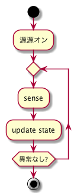

AI robot 外部仕様
1 概要
2 目的
2.1 自分の目的
2.1.1 Artificial Intelligence 人工知能
- 人工知能を実際に実装して理解を深める
- Particle Filter
2.1.2 Robotics
- ロボットの設計から実装までをやりとげる
2.1.3 mbed
- 今活発に発展を続けるマイコンを使用する
2.1.4 Domain Driven Development
- 仕事にも活用できる知識を身につける
2.2 教育の機会を人に提供する
2.2.1 Artificial Intelligence 人工知能
- Bayes統計の理解
- 人工知能の理解
- Particle Filter
2.2.2 Robotics
2.2.3 mbed
- mbed の発展に貢献
2.2.4 Domain Driven Development
- ソフトウエアのモジュール化
- 人工知能のモジュール化(?)
3 サイズ
4 機能
4.1 一連の動作

4.1.1 動作条件
- 平らな場所
- PC(Mac)でモニターアプリケーションをインストール
- PC(Mac)に通信用XBeeモジュールをUSB接続
4.1.2 動作状態の確認
Robotに状態を視覚的に確認するLED
状態とは
- Ready : 準備OK （PCコントローラとの通信確立）
青点灯
- Waiting : マニュアル操作待ち （できることはすべて完了し、次の動作指示を待つ）
青点滅
- Disconnected : 通信に異常
赤点灯
- Low Battery : 要充電
赤点滅（?）
- System Error : システムに異常
赤点滅
4.2 設定
4.3 シミュレーション